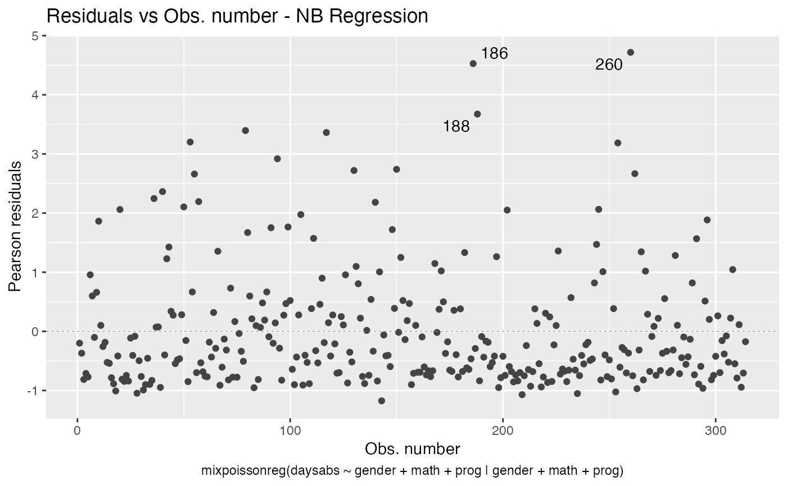
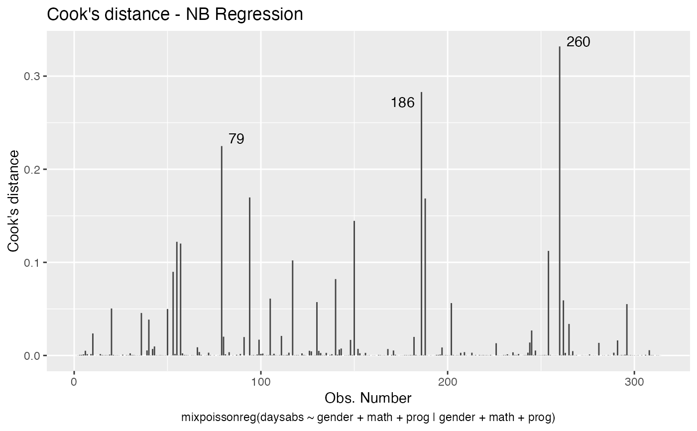
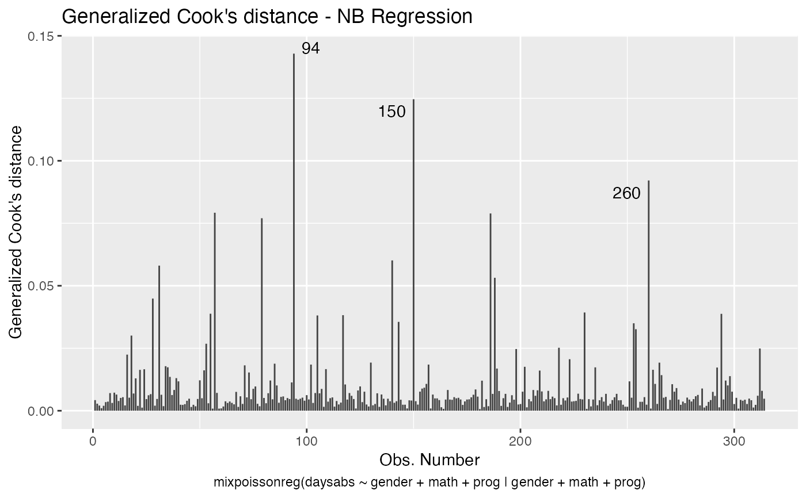
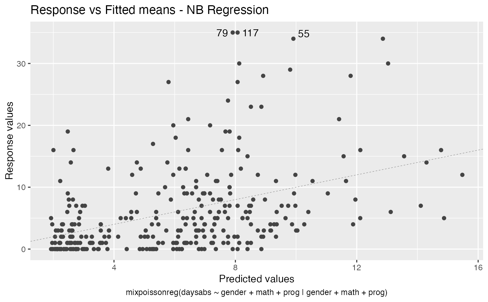
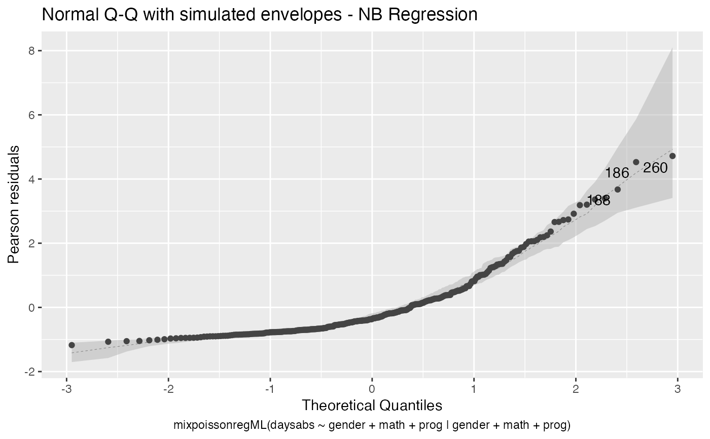

mixpoissonreg ObjectsR/8_tidy_mixpoissonreg.R
autoplot.mixpoissonreg.RdThis function provides ggplot2-based counterparts to the plots produced by plot.mixpoissonreg.
Currently there are six plots available. They contain residual analysis and global influence diagnostics. The plots are selectable by
the which argument. The plots are: Residuals vs. obs. numbers; Normal Q-Q plots, which may contain simulated envelopes, if the fitted object
has simulated envelopes; Cook's distances vs. obs. numbers; Generalized Cook's distances vs. obs. numbers; Cook's distances vs. Generalized Cook's distances;
Response variables vs. fitted means. By default, the first two plots and the last two plots are provided.
If both ncol and nrow are NULL, the plots will be placed one at a time. To place multiple plots, set the values for nrow or ncol.
# S3 method for mixpoissonreg autoplot( object, which = c(1, 2, 5, 6), title = list("Residuals vs Obs. number", "Normal Q-Q", "Cook's distance", "Generalized Cook's distance", "Cook's dist vs Generalized Cook's dist", "Response vs Fitted means"), label.repel = TRUE, nrow = NULL, ncol = NULL, qqline = TRUE, ask = prod(graphics::par("mfcol")) < length(which) && grDevices::dev.interactive(), include.modeltype = TRUE, include.residualtype = FALSE, sub.caption = NULL, env_alpha = 0.5, env_fill = "grey70", gpar_sub.caption = list(fontface = "bold"), colour = "#444444", size = NULL, linetype = NULL, alpha = NULL, fill = NULL, shape = NULL, label = TRUE, label.label = NULL, label.colour = "#000000", label.alpha = NULL, label.size = NULL, label.angle = NULL, label.family = NULL, label.fontface = NULL, label.lineheight = NULL, label.hjust = NULL, label.vjust = NULL, label.n = 3, ad.colour = "#888888", ad.linetype = "dashed", ad.size = 0.2, ... )
| object | A |
|---|---|
| which | a list or vector indicating which plots should be displayed. If a subset of the plots is required, specify a subset of the numbers 1:6,
see caption below for the different kinds. In
plot number 2, 'Normal Q-Q', if the |
| title | titles to appear above the plots; character vector or list of valid graphics annotations. Can be set to "" to suppress all captions. |
| label.repel | Logical flag indicating whether to use ggrepel to place the labels. |
| nrow | Number of facet/subplot rows. If both |
| ncol | Number of facet/subplot columns. If both |
| qqline | logical; if |
| ask | logical; if |
| include.modeltype | logical. Indicates whether the model type ('NB' or 'PIG') should be displayed on the captions. |
| include.residualtype | local. Indicates whether the name of the residual ('Pearson' or 'Score') should be displayed on the caption of plot 1 (Residuals vs. Index). |
| sub.caption | common title-above the figures if there are more than one. If NULL, as by default, a possible abbreviated version of |
| env_alpha | alpha of the envelope region (when the fitted model has envelopes) |
| env_fill | the colour of the filling in the envelopes. |
| gpar_sub.caption | list of gpar parameters to be used as common title in the case of multiple plots. The title will be given in sub.caption argument. See
the help of |
| colour | line colour. |
| size | point size. |
| linetype | line type. |
| alpha | alpha of the plot. |
| fill | fill colour. |
| shape | point shape. |
| label | Logical value whether to display labels. |
| label.label | vector of labels. If |
| label.colour | Colour for text labels. |
| label.alpha | Alpha for text labels. |
| label.size | Size for text labels. |
| label.angle | Angle for text labels. |
| label.family | Font family for text labels. |
| label.fontface | Fontface for text labels. |
| label.lineheight | Lineheight for text labels. |
| label.hjust | Horizontal adjustment for text labels. |
| label.vjust | Vertical adjustment for text labels. |
| label.n | Number of points to be laeled in each plot, starting with the most extreme. |
| ad.colour | Line colour for additional lines. |
| ad.linetype | Line type for additional lines. |
| ad.size | Fill colour for additional lines. |
| ... | other arguments passed to methods. |
Based on autoplot.lm from the excellent ggfortify package, ggfortify.
sub.caption - by default the function call - is shown as a subtitle (under the x-axis title) on each plot when plots are on separate pages, or as a subtitle in the outer margin when there are multiple plots per page.
# \donttest{ data("Attendance", package = "mixpoissonreg") daysabs_fit <- mixpoissonreg(daysabs ~ gender + math + prog | gender + math + prog, data = Attendance) autoplot(daysabs_fit, which = 1:6)autoplot(daysabs_fit, nrow = 2)daysabs_fit_ml <- mixpoissonregML(daysabs ~ gender + math + prog | gender + math + prog, data = Attendance, envelope = 100) autoplot(daysabs_fit_ml, which = 2)# }